República Dominicana
Provincias con sus senadores, Población y escudo
- Azua: Azua de Compostela
- Senador/a: Lía Díaz Santana
- Población: 256,981
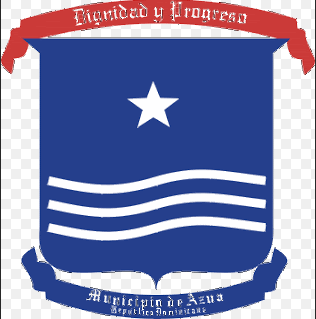
- Bahoruco: Neiba
- Senador/a: Melania Salvador Jiménez
- Población: 118,987
- Barahona: Santa Cruz de Barahona
- Senador/a: José Manuel del Castillo Saviñón
- Población: 226,898
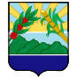
- Dajabón: Dajabón
- Senador/a: David Rafael Sosa Cerda
- Población: 67,887

- Distrito Nacional: Santo Domingo
- Senador/a: Antonio Taveras
- Población: 1,484,789

- Duarte: San Francisco de Macorís
- Senador/a: Franklin Romero
- Población: 384,789
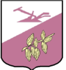
- Elías Piña: Comendador
- Senador/a: Iván Lorenzo
- Población: 70,589
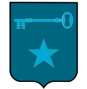
- El Seibo: Santa Cruz de El Seibo
- Senador/a: Santiago José Zorrilla
- Población: 115,889

- Espaillat: Moca
- Senador/a: Carlos Gómez
- Población:390,478
- Hato Mayor: Hato Mayor del Rey
- Senador/a: Cristóbal Antonio Venerado
- Población:89,578
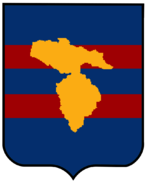
- Hermanas Mirabal: Salcedo
- Senador/a: Juan Bautista Rojas
- Población: 103,974
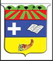
- Independencia: Jimaní
- Senador/a: Juan Orlando Mercedes Sena
- Población: 54,785
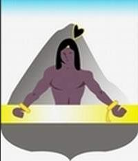
- La Altagracia: Salvaleón de Higüey
- Senador/a: Virgilio Cedano Cedano
- Población:
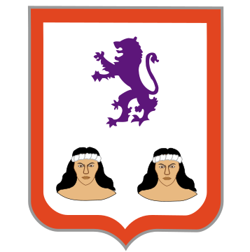
- La Romana: La Romana
- Senador/a: Dr. Iván Silva
- Población: 330,587
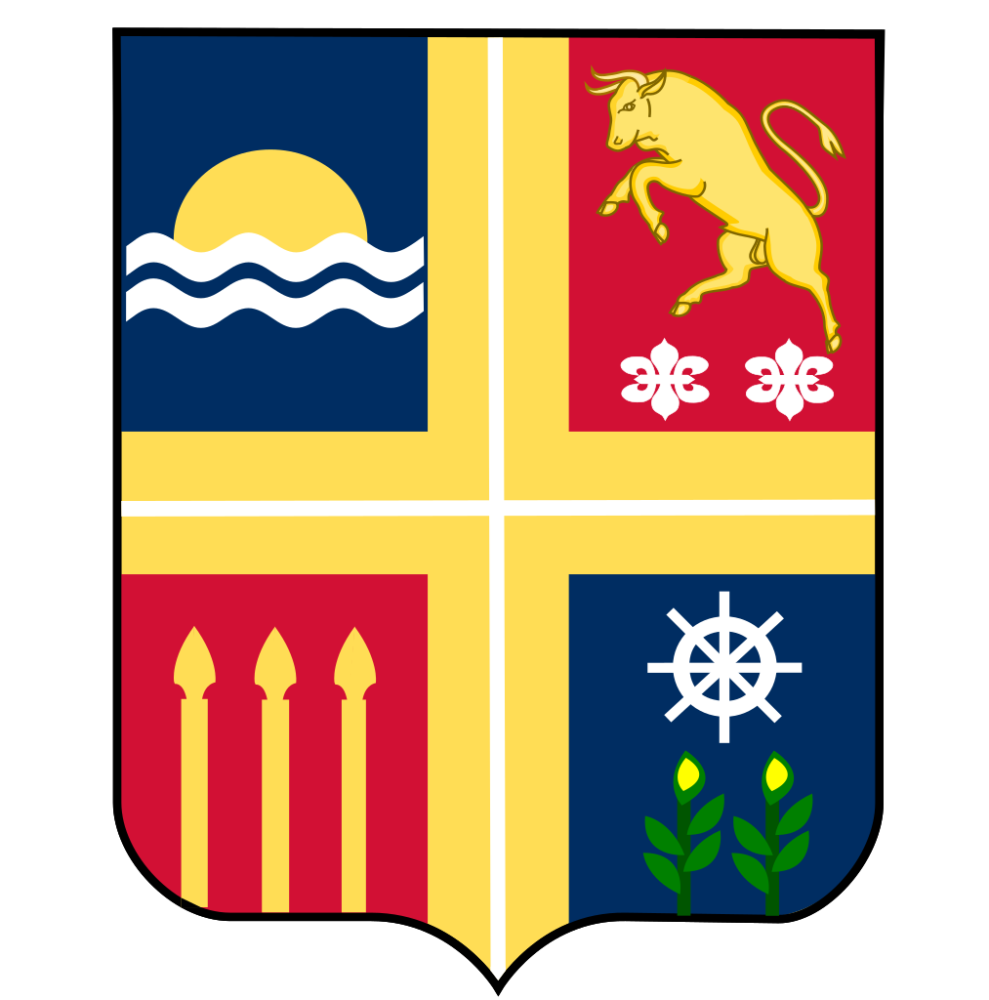
- La Vega: La Vega
- Senador/a: Ramón Rogelio Genao
- Población: 420,478
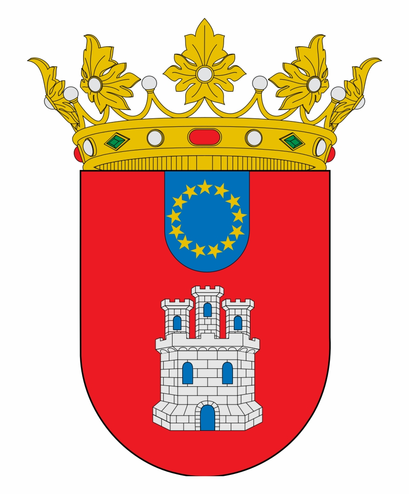
- María Trinidad Sánchez: Nagua
- Senador/a: Alexis Victoria Yeb
- Población: 140,784
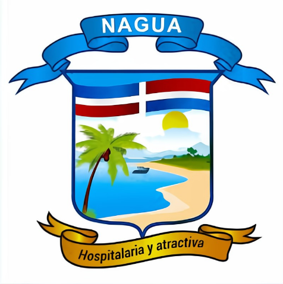
- Monseñor Nouel: Bonao
- Senador/a: Hector Acosta
- Población: 201,474
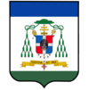
- Monte Cristi: San Fernando de Monte Cristi
- Senador/a: Ramón Pimentel Gómez
- Población:135,710

- Monte Plata: Monte Plata
- Senador/a: Lenin Valdez López
- Población: 200,454
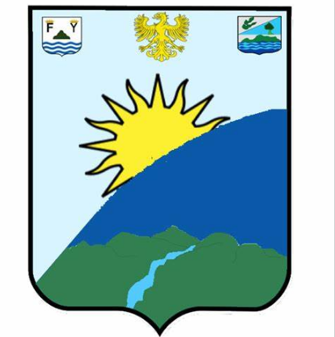
- Pedernales: Pedernales
- Senador/a: Dionis Sánchez Carrasco
- Población: 38,941
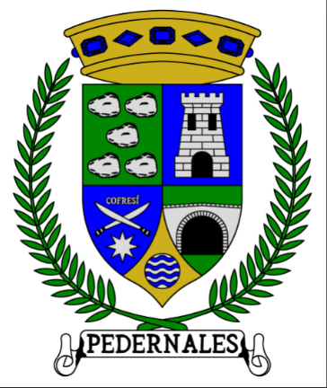
- Peravia: Baní
- Senador/a: Milcíades Marino Franjul
- Población: 298,747
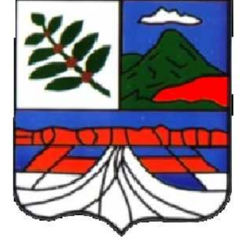
- Puerto Plata: San Felipe de Puerto Plata
- Senador/a: Ginnette Altagracia Bournigal
- Población:490,733
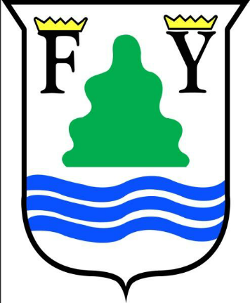
- Samaná: Santa Bárbara de Samaná
- Senador/a: Pedro Catrain Bonilla
- Población: 168,265
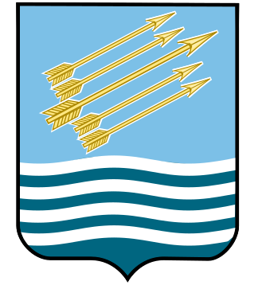
- San Cristóbal: San Cristóbal
- Senador/a: Franklin Alberto Rodríguez
- Población: 248,807
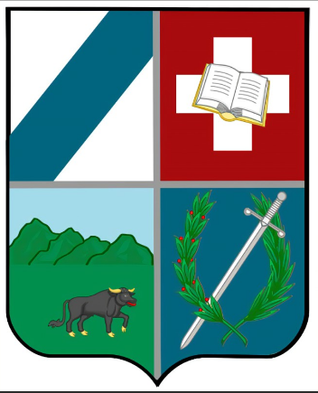
- San José de Ocoa: San José de Ocoa
- Senador/a: José Antonio Castillo
- Población: 82,458
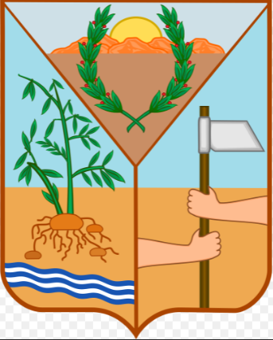
- San Juan: San Juan de Maguana
- Senador/a: Félix Ramón Bautista Rosario
- Población: 300,476
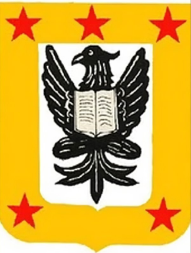
- San Pedro de Macorís: San Pedro de Macorís
- Senador/a: Franklin Peña
- Población: 418,850
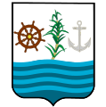
- Sánchez Ramírez: Cotuí
- Senador/a: Ricardo de los Santos Polanco
- Población: 248,807
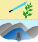
- Santiago: Santiago de los Caballeros
- Senador/a: Eduardo Estrella Virella
- Población: 1,833,451
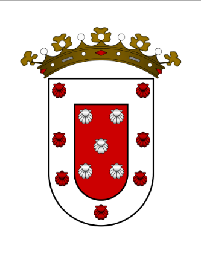
- Santiago Rodríguez: San Ignacio de Sabaneta
- Senador/a: Antonio Marte Fernández
- Población: 164,941
- Santo Domingo: Santo Domingo Este
- Senador/a: Antonio Taveras Guzmán
- Población: 2,995,211
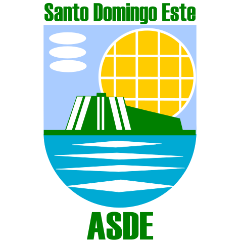
- Valverde: Santa Cruz de Mao
- Senador/a: Martin Nolasco Vargas
- Población: 207,447